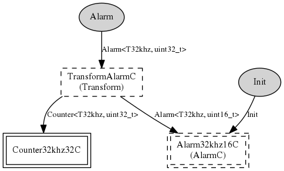

Component: tos.chips.msp430.timer.Alarm32khz32C
generic configuration Alarm32khz32C()
Alarm32khzC is the alarm for async 32khz alarms
- Author:
-
Cory Sharp <cssharp@eecs.berkeley.edu>
- See:
-
Please refer to TEP 102 for more information about this component and its
intended use.
Provides
interface
Alarm<T32khz, uint32_t>
Wiring
